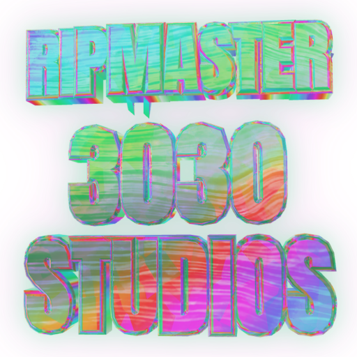

presents


Liquid Editions · Cohort 01 · $3030
An indie card & game studio. $3030 is the edition; every card is a lens over it — artwork that reads the token's live market state and redraws itself. Hold more, and some lenses show you more.
—live supply
—burned forever
100cards in the deck
33hero 1/1 lenses
- Collect the edition. $3030 trades on its curve, right here on SuperRare.
- Rip a pack. Packs are bought and burned — tokens retired permanently, while the reserve behind every surviving token stays put. Ripping pays the holders.
- Play the cabinets. Five games. Your cards carry powers into them.
- Earn a hero. 33 of the 100 mint as 1/1 lenses — some pulled, some won.
This page will never ask for your wallet. It is a showcase — no connect button, no
signing, nothing to approve. Anything needing a wallet happens on the studio site, which you
reach by choosing to go there. If a framed artwork ever asks you to connect, treat that as a
warning sign.
NFA. Experimental art token — it can go to zero. Burns are permanent, and modest at this supply; we don't sell it as a scarcity engine.